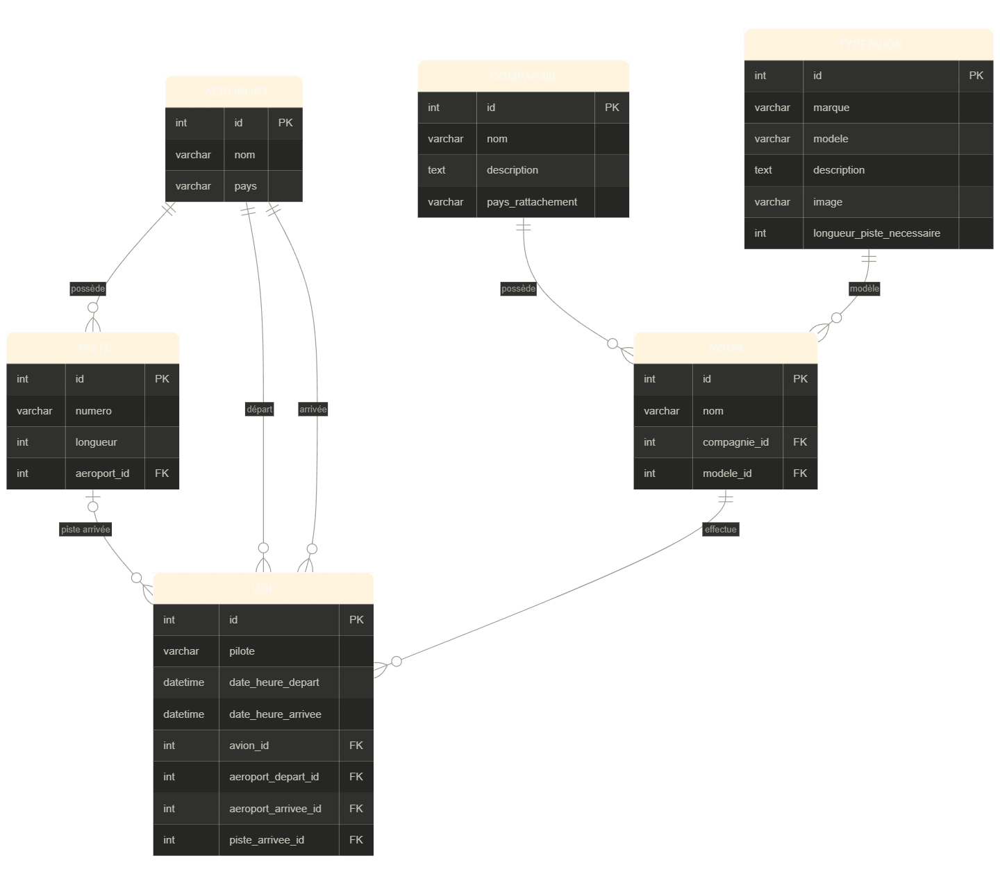

SAE 2.03 — Gestion du Trafic Aérien
Application web Django pour gérer le trafic aérien : aéroports, pistes, compagnies, avions et vols.
Prérequis
- Python 3.x
- Accès à un serveur MySQL (par défaut :
192.168.1.80:3306)
Installation
1. Cloner le repo
git clone https://github.com/Patpat200/Gestion-Trafic-Aerien-Django
cd Gestion-Trafic-Aerien-Django
2. Créer l'environnement virtuel
python -m venv venv
# Windows
./venv/Scripts/activate
# Linux / Mac
source venv/bin/activate
3. Installer les dépendances
pip install -r requirements.txt
4. Créer la base de données
Sur le serveur MySQL :
CREATE DATABASE trafic_aerien CHARACTER SET utf8mb4;
CREATE USER 'django_user'@'%' IDENTIFIED BY 'toto';
GRANT ALL PRIVILEGES ON trafic_aerien.* TO 'django_user'@'%';
FLUSH PRIVILEGES;
Puis exécuter les scripts SQL :
mysql -u django_user -p trafic_aerien < schema.sql
mysql -u django_user -p trafic_aerien < donnees.sql
5. Configurer la connexion
Dans SAE203/settings.py, modifier si besoin :
DATABASES = {
'default': {
'ENGINE': 'django.db.backends.mysql',
'NAME': 'trafic_aerien',
'USER': 'django_user',
'PASSWORD': 'toto',
'HOST': '192.168.1.80',
'PORT': '3306',
}
}
6. Lancer le serveur
python manage.py runserver
L'application est accessible sur : http://127.0.0.1:8000/
Fonctionnalités
- Gestion des aéroports, pistes, compagnies, types d'avions et avions (ajout, modification, suppression)
- Création de vols avec attribution automatique de piste selon la longueur disponible et les créneaux horaires
- Suggestion d'un créneau alternatif si toutes les pistes sont occupées
- Import de vols en masse via fichier CSV
- Fiches de vols filtrables par aéroport, date et sens (départs / arrivées), imprimables
Format CSV pour l'import de vols
avion,pilote,aeroport_depart,date_heure_depart,aeroport_arrivee,date_heure_arrivee
F-GKXA,Jean Dupont,Charles de Gaulle,2026-06-01 08:00,Lyon Saint-Exupery,2026-06-01 09:15
Structure du projet
SAE203/ → configuration Django (settings, urls)
TraficAerien/ → application principale
models.py → modèles (6 tables)
views.py → vues et logique métier
forms.py → formulaires
urls.py → routes
templates/ → pages HTML
schema.sql → création des tables
donnees.sql → données de test
requirements.txt → dépendances Python
Schéma Relationnel
